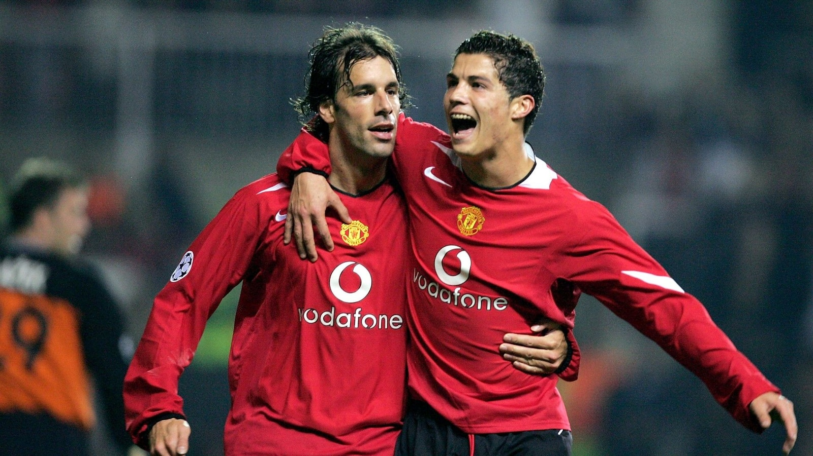

Van Nistelrooy Clash — 'Go Cry to Your Daddy'
Training-ground bust-up origin: At Carrington in 2005, the hot-headed young Ronaldo clashed with United's star striker Ruud van Nistelrooy. At the time Van Nistelrooy was United's 'big brother' and Ronaldo just a flashy kid; in one training drill the two completely fell out over passing choices and positioning, the scene was briefly spiralling, with teammates having to pull them apart.
'Go cry to your daddy': In the argument Van Nistelrooy threw the most savage line — 'Go and cry to your daddy!' It was no ordinary trash talk, because in September 2005 Ronaldo's father José Dinis Aveiro had just died of alcohol-related liver failure; the grief was still raw. Van Nistelrooy's words were rubbing salt in the wound.
The kid wept on the spot: According to former United teammate Louis Saha, the jibe brought Ronaldo to the verge of tears. A twenty-something boy far from home, humiliated about his dead father at his most vulnerable moment — the pain was unimaginable to outsiders. Rio Ferdinand also recalled that the young Ronaldo 'took it really hard'.
Ferguson's choice: The clash was a turning point in United's dressing-room power. Sir Alex Ferguson weighed it up and concluded that Ronaldo's ceiling was far higher than the thirty-something Van Nistelrooy's, and in summer 2006 sold Van Nistelrooy to Real Madrid for a cut-price €14M. The boss's actions declared: United's future belonged to this mocked Portuguese kid.
Van Nistelrooy's later regret: Years later Van Nistelrooy himself admitted his behaviour was 'inappropriate and over the line'. An apology is an apology, but the line 'go cry to your daddy' has become a textbook case of dressing-room bullying — also reminding us that Ronaldo in his early years was no 'chosen one', but climbed to the throne amid mockery and tears.
The sad irony of the father's death: More poignantly, one of Ronaldo's most enduring career motivations has been missing his late father — he has pointed to the sky to comfort his father after countless goals. Van Nistelrooy jabbed exactly his deepest wound, and this clash therefore transcended ordinary teammate conflict, becoming a tearing of human fibre with tragic undertones.
Verdict: The clash with Van Nistelrooy is one of the hardest episodes of Cristiano's career. Years later, the Dutchman publicly apologised for how he had treated the young Portuguese.